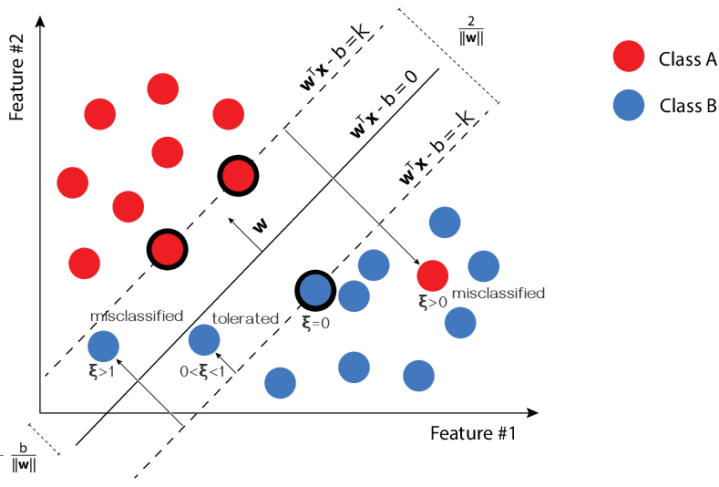
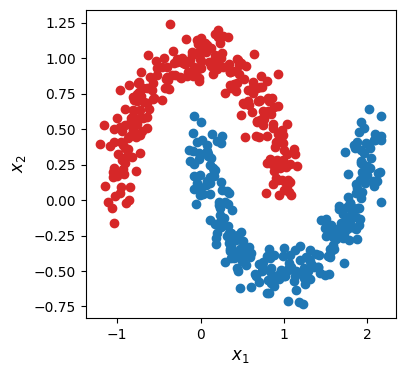
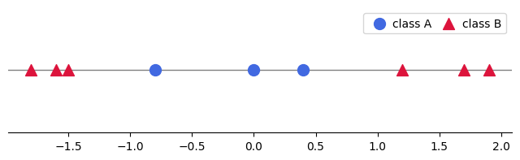
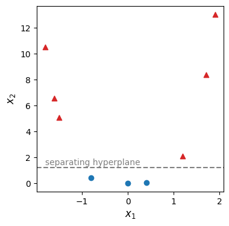
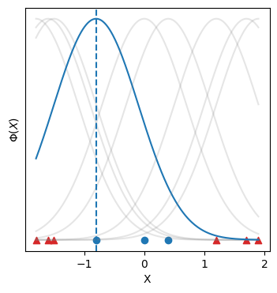
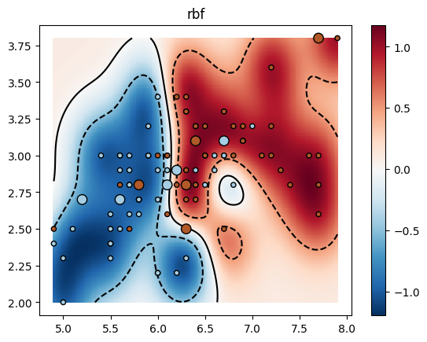
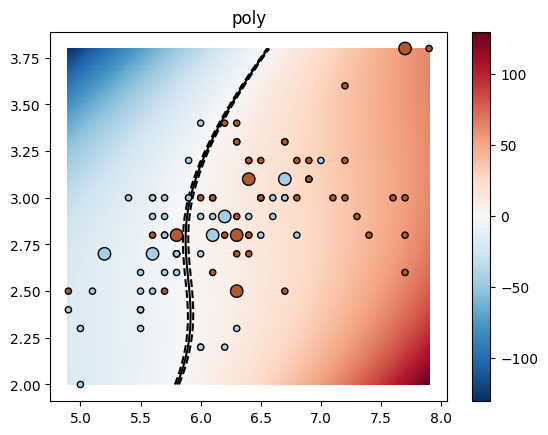
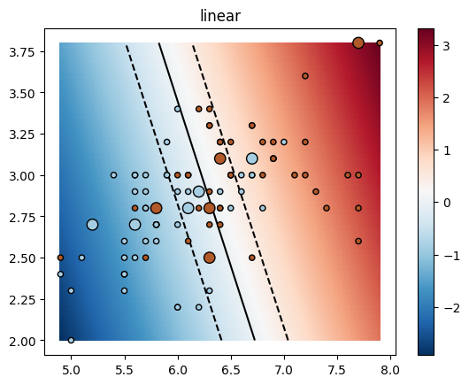
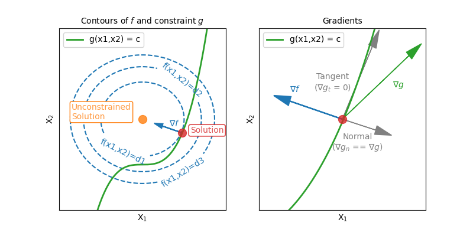
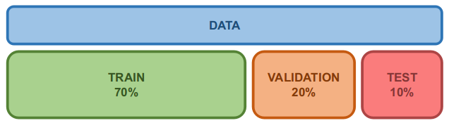

Support Vector Machines and Cross Validation #
Paolo Bonfini, 2025. All rights reserved.
This work is the intellectual property of Paolo Bonfini. All content produced in this notebook is original creation of the author unless specified otherwise. Unauthorized use, reproduction, or distribution of this material, in whole or in part, without explicit permission from the author, is strictly prohibited.
Support Vector Machine (a.k.a. SVM)#
Historical importance#
SVM may be “just another” classifier (and regressor).
However, this specific algorithm represented an historical pivotal point for several reasons \(-\) among which:
It dominated the Machine Learning landscape in the 1990s
Due to its success on diverse benchmark datasets (text classification, image recognition, etc.) it temporarily shadowed the other emerging competitor: Neural Networks.
It introduced the kernel trick (see later)
A simple mathematical trick that allows to solve non-linear problems by implicitly mapping data to a higher-dimensional space.
It has a groudbraking theoretical fundation
By shifting the attention to the “gerneralization error”, it provided the rigorous framework used by modern ML.
What SVM tries to do#
Simply put \(-\) SVM tries to find (fit) the widest possible “street” between the classes:

|
Figure 1. The class-separating margin (within the black lines) identified by SVM, in a 2-class problem. (Adapted from here) |
In other words, it tries to separate the classes as much as possible
The “street” is formaly called “margin”. The hyperplane cutting it into half is the “separation hyperplane” (or “classification hyperplane”).
\(\rightarrow\) Once fit, the classes can be separated depending on which side of the separation hyperplane they fall.
SVM: Linear, Separable case#
Let’s define the hyperplane \(h(\pmb{x})\) when the classes are linearly separable:

|
Figure 2. Linearly separable classes, and problem definition. (Adapted from here) |
In \(d\) dimensions, an hyperplane can be written as (notice the similarity with the linear modelling):
where:
\(\pmb{w}\) is some vector perpendicular to the hyperplane
\(h(\pmb{x}) = 0\) if a point \(\pmb{x}\) is exactly on the plane
\(h(\pmb{x}) > 0\) [or \(h(\pmb{x}) < 0\)] if \(\pmb{x}\) falls on a side of the plane
The Decision Function is therefore very simple:
\(\rightarrow\) we just need to find \(\pmb{w}\) and \(b\) by fitting!
Defining the optimization problem#
There are at least 3 points (see Figure 2) which touch the margin \(\rightarrow\) “support vectors”
The support vectors are located at some \(\pm k\) from the hyperplane.
\(\rightarrow\) With basic geometry, we can see that the margin width is:
So the optimization problem becomes:
Find \(\pmb{w}\), \(b\), that optimize:
Now, some simplifications:
\(k\) depends on the data normalization, but is a constant \(\rightarrow\) we can ignore it in the maximization, and set it to 1
The \(max\) of \({2 \over ||w||}\) is the same as the \(max\) of \({2 \over ||w||^2}\) \(\rightarrow\) easier to maximize
The \(max\) of \({2 \over ||w||}\) is the same as the \(min\) of \({||w||^2 \over 2}\) \(\rightarrow\) easier, no singularity
The two inequalities can be re-written as a single one (see Logistic Regression trick) \(\rightarrow\) \(y_i (\pmb{w} x_i + b) \geq 1, \forall x_i\)
Find \(\pmb{w}\), \(b\), that optimize:
Solution
✅ Convex problem \(\rightarrow\) Unique minimum
🛑 Not solvable if data are not linearly separable
Anyways, how do we use e.g. Gradient Descent … when there is a constraint ???
\(\text{s.t.} \quad y_i (\pmb{w} x_i + b) \geq 1, \forall x_i \) \(~~~~~\leftarrow\) insert surprised pikachu face
\(\rightarrow\) Quadratic Programming solvers can deal with linear constraints
SVM: Linear, non-Separable case#
Alas, in real data classes are usually non-linearly separable (i.e., overlapping, not separable by an hyperplane):
{kind=link}

|
Figure 3. Non-linearly separable classes, and problem definition. (Adapted from here) |
\(\rightarrow\) We can introduce a “slack variable” \(\xi\)
(Corinna Cortes & Vladimir Vapnik, 1995; NOTE: Corinna is currently Vice President at Google Research)
\(\xi = 0\) : Support vector point
\(0 < \xi < 1\) : Point beyond the margin, but on the correct side of the classification hyperplane
\(1 < \xi\) : Misclassified point
We need to penalize our cost function (Equation 1) using \(\xi\) \(-\) This is called “soft-margin” problem:
This is actually the SVM we use in practical applications.
Intuition:
Try to maintain every \(\xi_i\) to zero while maximizing margin
As \(C \rightarrow +\infty\), we go back to the “hard margin” case
where \(C\) is a hyperparameter regulating the “tolerance” to the violations (fixed) while every \(\xi_i\) is a parameter (must be fit).
Solution
\(\rightarrow\) Quadratic Programming solvers can also solve this non-Separable case
SVM: Non-Linear case & kernel trick#
What if we can’t separate efficiently the classes with a hyperplane, even with soft-margin SVM?
from sklearn.datasets import make_moons
X, y = make_moons(n_samples=500, noise=0.1, random_state=42)
from matplotlib import pyplot as plt
plt.figure(figsize=(4, 4))
plt.scatter(X[:, 0][y==1], X[:, 1][y==1], c="C0")
plt.scatter(X[:, 0][y==0], X[:, 1][y==0], c="C3")
plt.xlabel(r"$x_1$", fontsize=12)
plt.ylabel(r"$x_2$", fontsize=12)
plt.show()

Let’s start from a simple 1D case:
import numpy as np
import matplotlib.pyplot as plt
X = np.array([-1.8, -1.6, -1.5, -0.8, 0, 0.4, 1.2, 1.7, 1.9])
y = np.array([1, 1, 1, 0, 0, 0, 1, 1, 1])
plt.figure(figsize=(8, 2))
plt.scatter(X[y==0], np.zeros(sum(y==0)), s=100, c='royalblue', label='class A', marker='o')
plt.scatter(X[y==1], np.zeros(sum(y==1)), s=100, c='crimson', label='class B', marker='^')
plt.gca().spines['top'].set_visible(False)
plt.gca().spines['right'].set_visible(False)
plt.gca().spines['left'].set_visible(False)
plt.yticks([])
plt.axhline(0, color='grey', linewidth=1, zorder=-1)
plt.legend(ncol=3, handletextpad=0.2, columnspacing=0.5)
plt.show()

Well, we could try to artificially increase the dimensions, and try to use a hyperplane in the extended feature space:
(sort of what we saw for Logistic Regression …)
X_prime = np.c_[X, X**4]
from matplotlib import pyplot as plt
plt.figure(figsize=(4, 4))
plt.scatter(X_prime[:, 0][y==0], X_prime[:, 1][y==0], marker='o', c="C0")
plt.scatter(X_prime[:, 0][y==1], X_prime[:, 1][y==1], marker='^', c="C3")
plt.axhline(y=1.2, ls='--', c='grey')
plt.text(-1.8, 1.4, 'separating hyperplane', c='grey')
plt.xlabel(r"$x_1$", fontsize=12)
plt.ylabel(r"$x_2$", fontsize=12)
plt.show()

As the problem becomes more complex, we may want to send the data to even higher dimensional spaces:
… or, up to degree 10, with all the cross terms:
Or even to an infinite dimensional space, e.g. sending a point \(x_i\) to the space of all the points of a Gaussian centered on \(x_i\):
import numpy as np
import matplotlib.pyplot as plt
def gaussian(x, mu, gamma=1, sigma=1):
return np.exp(-gamma*(x - mu)**2)
plt.figure(figsize=(4, 4))
plt.scatter(X[y==0], np.zeros(len(X[y==0])), marker='o', c="C0")
plt.scatter(X[y==1], np.zeros(len(X[y==1])), marker='^', c="C3")
idx = 3
xx = np.linspace(np.min(X), np.max(X), 400)
for i in range(len(X)):
color = 'C0' if i == idx else 'grey'
alpha = 1 if i == idx else 0.2
yy = gaussian(xx, X[i])
plt.plot(xx, yy, c=color, alpha=alpha)
plt.axvline(x=X[idx], ls='--')
plt.xlabel('X')
plt.ylabel(r'$\Phi(X)$')
plt.yticks([])
plt.show()

How can we deal with infinite dimensions?
This is possible in SVM thanks to the so-called “kernel trick”.
First, notice that our optimization problem of Equation 2,
can be transformed into:
where the \(\alpha_i\)’s are new parameters to be fit, and \(i\) and \(j\) are sample indices.
(not demonstrated here; but see later “Dual Lagrangian” to understand the rationale behind it)
Now, if we map \(x \rightarrow \Phi(x)\), we simply get:
The kernel trick simply states that we can replace the impossible-to-calculate \(\Phi(x_i)^T \Phi(x_j)\) (because it happens in an \(\infty\)-dimensional space) with:
where \(K\) is e.g., the Gaussian we mentioned above:
except that now we don’t have to calculate infinite values, but just the one for (\(x_i\), \(x_j\)).
Therefore, our optimization problem finally becomes:
IMPORTANT
In reality we don’t choose \(\Phi(.)\) and then we find the \(K(.,.)\) such that \( \Phi(x_i)^T \Phi(x_j) = K(x_i, x_j)\)
We use it the other way around!
We define some simple \(K(.,.)\) (e.g., the Gaussian), and we assume there exists some feature space \(\Phi(.)\) (that we never have to use!) such that \( \Phi(x_i)^T \Phi(x_j) = K(x_i, x_j)\)
Kernels
Can we choose any function \(K(.,.)\)? \(\rightarrow\) NO
But any function which is “well behaved” can work as a kernel!
Namely: symmetric, continuous, positive semi-definite (\(\rightarrow\) Mercer’s Teorem)
SVM in sklearn#
The following cell shows a trained Support Vector Machine classifier. The decision function (color shades and iso-contours) and the separation hyperplane (solid lines/curves) along with the margins (dashed lines/curves) passing through the support vectors.
# This example is adopted from here:
# https://scikit-learn.org/stable/auto_examples/exercises/plot_iris_exercise.html#sphx-glr-auto-examples-exercises-plot-iris-exercise-py
# ... but adjusting the plotting as suggeted here:
# https://scikit-learn.org/stable/auto_examples/svm/plot_svm_margin.html#sphx-glr-auto-examples-svm-plot-svm-margin-py
import numpy as np
import matplotlib.pyplot as plt
import warnings
warnings.filterwarnings("ignore")
# suppressing Matplotlib warnings for previous versions
from matplotlib import cm
from sklearn import datasets, svm
from sklearn.svm import LinearSVC
iris = datasets.load_iris()
X = iris.data
y = iris.target
X = X[y != 0, :2]
y = y[y != 0]
n_sample = len(X)
np.random.seed(0)
order = np.random.permutation(n_sample)
X = X[order]
y = y[order].astype(float)
X_train = X[: int(0.9 * n_sample)]
y_train = y[: int(0.9 * n_sample)]
X_test = X[int(0.9 * n_sample) :]
y_test = y[int(0.9 * n_sample) :]
# fit the model
for kernel in ("rbf", "poly", "linear"):
clf = svm.SVC(kernel=kernel, C=1, gamma=10)
clf.fit(X_train, y_train)
plt.figure()
plt.clf()
plt.scatter(
X[:, 0], X[:, 1], c=y, zorder=10, cmap=plt.cm.Paired, edgecolor="k", s=20
)
# Circle out the test data
plt.scatter(
X_test[:, 0], X_test[:, 1], c=y_test, cmap=plt.cm.Paired, s=80, facecolors="none", zorder=10, edgecolor="k"
)
plt.axis("tight")
x_min = X[:, 0].min()
x_max = X[:, 0].max()
y_min = X[:, 1].min()
y_max = X[:, 1].max()
XX, YY = np.mgrid[x_min:x_max:200j, y_min:y_max:200j]
Z = clf.decision_function(np.c_[XX.ravel(), YY.ravel()])
# Put the result into a color plot
Z = Z.reshape(XX.shape)
series = plt.pcolormesh(XX, YY, Z , cmap=cm.get_cmap("RdBu_r"))
plt.contour(
XX,
YY,
Z,
colors=["k", "k", "k"],
linestyles=["--", "-", "--"],
levels=[-0.5, 0, 0.5],
)
# Plotting the support vectors for the linear case
# NOTE: Plotting these will look confusing because it is not a linearly
# separable dataset!
#
#decision_function = clf.decision_function(X_train)
#support_vector_indices = np.where(np.abs(decision_function) <= 1 + 1e-15)[0]
#support_vectors = X_train[support_vector_indices]
#plt.scatter(support_vectors[:, 0], support_vectors[:, 1],
# s=100, linewidth=1, facecolors="none", edgecolors="k")
plt.colorbar(series)
plt.title(kernel)
plt.show()



Cost and decision functions#
Notice how cost and decision functions are 2 different things.
For SVM:
The decision function (which decides on the classification of data point \(x\)) is the signed distance to the separating hyperplane:
\[h(\boldsymbol{x})=\boldsymbol{w}^T\boldsymbol{x}+b\]The cost function (which is used to train the SVM by minimizing the separation of the hyperplanes) is the sum of the squared errors and penalizations:
\[L(\boldsymbol{w},\boldsymbol{\xi}) = {||\boldsymbol{w}||^2 \over 2}+C\sum_{i} \xi_{i} \]
See discussion here.
# e.g., let's print the decision function in one specific point:
x_ = np.array([[5, 2.25]])
clf.decision_function(x_)
array([-2.55961794])
Lagrange Multipliers to solve Constrained Optimization#
We said that Quadratic Programming solvers can deal with constrained optimization.
BUT …
It’s not always practical
May be computationally very expensive
Don’t offer inherent regularization for more stability
The solution is not sparse (uses all the data during the search; as opposed to the “Dual Lagrangian” \(-\) see later)
Doesn’t allow for non-linear separations (”kernel trick”)
Let’s see how a constrained optimization problem can be solved in a more general way.
Let’s see a generic case where we need to minimize a function \(f(\pmb{x})\), given the constraint that the optimal \(\pmb{\hat{x}}\) shall also satisfy \(g(\pmb{x}) = c\) :
{kind=link}

|
Figure 4. A generic case of constrained optimization of a function $f$ with equality constraint $g$. (Image credits: Paolo Bonfini) |
Normally, we would only follow the gradient of \(f(\pmb{x})\) to the solution (orange point), but now we are constrained (“anchored”) along \(g(\pmb{x})\) …
Note that the tangent component of the gradient of \(g\), i.e., \(\nabla g_t\) is by construction \(= 0\) because \(g\) is constant along the curve (left panel in figure)
\(\rightarrow\) \(\nabla g\) must be perpendicular to the curve \(g\).
We know that, at the optimal point \(\hat{\pmb{x}}\) (red point in figure) the gradients of the two functions must be parallel.
In other words, the derivatives are the same except for a constant \(\alpha\):
Idea \(\rightarrow\) We combine the 2 functions into a more powerful one, the Lagrangian:
where we call \(\alpha\) the “lagrangian multiplier”.
Now witness the magic: At the solution point \(\hat{\pmb{x}}\), the derivatives of \( L(\pmb{x}, \alpha) \) are all 0, both respect to \(\alpha\) and \(\pmb{x}\)! \(-\) In fact:
\( {\partial L(\pmb{\hat{x}}, \alpha) \over \partial \alpha} = {\partial f(\pmb{\hat{x}}) - \alpha ~ (g(\pmb{\hat{x}}) - c) \over \partial \alpha} = g(\pmb{\hat{x}}) - c \quad\) … which is 0 because \(g(\pmb{x}) = c\)
\( {\partial L(\pmb{\hat{x}}, \alpha) \over \partial x^j} = {\partial f(\pmb{\hat{x}}) - \alpha ~ (g(\pmb{\hat{x}}) - c) \over \partial x^j} = \partial_{x^j} f(\pmb{\hat{x}}) - \alpha ~ \partial_{x^j} g(\pmb{\hat{x}}) \quad\) … which is 0 because of Equation 5.
Therefore, at the solution point \(\pmb{\hat{x}}\):
\(\rightarrow\) We moved the optimization problem from \(f(\pmb{x})\) and \(g(\pmb{x})\) to just one function: \(L(\pmb{x}, \alpha)\)!
So, the optimization problem becomes:
Minimize \(L(\pmb{x}, \alpha)\) w.r.t. \(\pmb{x}\), and maximize it w.r.t. \(\alpha\):
Minimize w.r.t. \(\pmb{x}\) is obvious, but why maximize w.r.t. \(\alpha\)?
The Lagrange multiplier can be thought of as a penalty or price associated with violating the constraint.
So if we maximize w.r.t. \(\alpha\) \(\rightarrow\) we “push” the solution towards \(g(\pmb{x}) = c\).
\(\rightarrow\) Solvable alternating Gradient Descent steps in \(\pmb{x}\) and Gradient Ascent \(\alpha\)
(once we step down along \(\nabla_{\pmb{x}}L\), the next we step up along \(\nabla_{\alpha}L\), and repeat).
Fast-forward: the Dual Lagrangian#
In reality, we had to address not an equality constraint (like \(g(\pmb{x}) = c\)), but the inequality constraint of Equation 1:
We need to include inequality constraints in the Lagrangian.
Generalized Lagrangian
Given an optimization problem:
where:
\(( f: \mathbb{R}^n \rightarrow \mathbb{R} )\) is the objective function
\(( h_i: \mathbb{R}^n \rightarrow \mathbb{R} )\) are equality constraints
\(( g_j: \mathbb{R}^n \rightarrow \mathbb{R} )\) are inequality constraints
We can define the Generalized Lagrangian \(( L: \mathbb{R}^n \times \mathbb{R}^m \times \mathbb{R}^p_+ \rightarrow \mathbb{R} )\) as: $\( L(x, \lambda, \mu) = f(x) + \sum_{i=1}^m \lambda_i h_i(x) + \sum_{j=1}^p \mu_j g_j(x) \)$
where:
\(\lambda = (\lambda_1, \ldots, \lambda_m)\) are the Lagrange multipliers associated with the equality constraints
\(\mu = (\mu_1, \ldots, \mu_p)\) are the Lagrange multipliers associated with the inequality constraints, \(\mu_j \geq 0, \forall j\)
This is a solvable min max problem, but we will go one step further, to be able to also solve non-linear SVM (see later).
Karush-Kuhn-Tucker (KKT) conditions
If some conditions are respected, optimizing the Generalized Lagrangian becomes much easier \(-\) These are:
Stationarity Condition: \(\nabla_x L(x, \lambda, \mu) = 0\)
Primal Feasibility: \( \begin{aligned} h_i(x) &= 0, \quad i = 1, \ldots, m \\ g_j(x) &\leq 0, \quad j = 1, \ldots, p \end{aligned} \)
Dual Feasibility: \( \mu_j \geq 0, \quad j = 1, \ldots, p\)
Complementary Slackness: \(\mu_j g_j(x) = 0, \quad j = 1, \ldots, p\)
Dual optimization Problem
By plugging in the KKT conditions, and after some manipulation, the Lagrangian optimization problem of Equation 6 (Primal Problem),
becomes the much simpler Dual optimization Problem.
Having defined the Lagrangian dual function: $\( q(\lambda, \mu) = \inf_{x} L(x, \lambda, \mu) \)$
the Dual optimization Problem is:
The Dual Problem is simpler to optimize because it is only maximized on the lagrangian multipliers (no min\(~\)max)
Back to SVM#
It can be demonstrated that the SVM problem can be framed to satisfy the KKT conditions.
\(\rightarrow\) In fact, Equation 3 is the Dual of the SVM problem.
It is strongly advised to have at least a glimpse at these great notes to get a better idea of the rationale behind Dual Lagrangian optimization for SVM.
Cross Validation#
Standard train-validation-test protocol#
{kind=link}

|
Figure 5. Indicative recipe for splitting a dataset into the analysis sets. For very large datasets (above 10$^5$ entries), the percentages of validation and test can be substantially smaller. |
What are the different sets for? We already had a hint from the Classification sessions.
Train set \(~~~~~~\rightarrow\) Learn the model parameters
Validation set \(\rightarrow\) Check that the learnt model is not overfitting/underfitting the train set
Test set \(~~~~~~~\rightarrow\) Assess the model performance
IMPORTANT: Always re-fit on all Train + Validation data to obtain the best model (and Test if you don’t plan further analysis).
Cross Validation protocol (a.k.a. \(k\)-fold Cross Validation)#
Am I overfitting the train set?
This is a common doubt when we split our data in just a train, [a validation] and a test set.
Would the results change if we shuffled the data differently?
Cross Validation is a tecnique used assess how a model would generalize to unseen data.
It involves re-fitting the model over different partitionings of the dataset:

|
Figure 6. Data splitting for a Cross Validation with $k = 4$ folds. |
A \(k\)-fold CV splits the data in \(k\) parts (folds), and, at each iteration:
uses \(k\)-1 folds for training
uses the remaining fold for testing (although we indistinctively call it validation set, in this context)
The model is tested \(k\) times, always on unseen data.
In this way, CV actually tackles 2 issues:
Assessment of bias
(i.e. how much the model depends on a specific training set)Exploitation of the whole dataset
(i.e. all data are eventually used for both training and testing)
Each model fit produces a performance score, therefore we can obtain both an average estimate, and a uncertainty on it.
IMPORTANT: While the CV gives performance estimates, the final model shall be re-trained on all the data.
We can reasonably assume that the re-trained model will be at least as performing as the CV average.
Q: What is the right \(k\)?
R: Common values range between 3 and 10, but depends on:
how many data we have
how much time we have
because for larger \(k\) we got more estimates, but in exchange we get:
a smaller test set at each iteration
more computations
Variants
Repeated CV: CV, but repeated \(n\) times with different shuffling
Stratified CV: CV, but the demographics of each fold is representative of the data (e.g., same class demoographics)
Cross Validation for hypeparameter tuning#
You can use CV to select the best hyperparameter for a classifier \(-\) e.g. the C parameter of a SVM classifier:
Just run the CV as above, and at each iteration fit and assess a model for each C you want to evaluate.
The “best C” is the one that on average yields the best performance.
Re-train on all data using “best C”.
IMPORTANT This time we cannot use the Validation set for both selecting the best hyperparameter and assessing the performance! Use instead a hold-out test set!
Exercise [30 min]
Objective: The ultimate objective is to figure out the best hyperparameter C.
Tasks:
The best hyperparameter will by found by implementing a cross-validation loop for the data and SVC classifier above:
Keep out a hold-out test set (separated from your a master training set)
At each CV loop you must:
further split the master training set in train and validation folds
train the classifier on the train fold on all the C’s you want to consider
assess the performance (accuracy) on the validation fold
store the results
At the exit of the loop:
identify the the “best C” model
retrain the “best C” model on all master training data \(\rightarrow\) this provides the actual model
Make sure you got your estimate right, by measuring the performance of your model on the unseen hold-out test set \(\rightarrow\) this provides an assessment of the model
Hints:
You will find an already functioning “proxy” code \(\rightarrow\) You will have to edit it to achieve the tasks.
Pay attention to the comments!
Q: Why are the mean performance and standard deviation of the the “best C” models at each iteration biased?
'''Uncomment the lines, and replace "..." with the proper code''';
'''
Use the:
sklearn.metrics.accuracy_score
function to calculate the accuracy quickly
Instructions:
https://scikit-learn.org/stable/modules/generated/sklearn.metrics.accuracy_score.html
''';
import numpy as np
import matplotlib.pyplot as plt
import warnings
warnings.filterwarnings("ignore")
# suppressing Matplotlib warnings for previous versions
from matplotlib import cm
from sklearn import datasets, svm
from sklearn.svm import LinearSVC
from sklearn.metrics import accuracy_score
iris = datasets.load_iris()
X = iris.data
y = iris.target
print('Data shape:', X.shape)
n_samples = len(X)
# Shuffling the data:
np.random.seed(42)
idxs_shuffled = np.random.permutation(n_samples)
X = X[idxs_shuffled]
y = y[idxs_shuffled].astype(float)
k = 4
# number of folds
accuracies = {}
# accuracies = {
# '1': [0.97, 0.85, 0.98, 0.47],
# '10': [0.85, 0.97, 0.91, 0.90],
# '100': [0.73, 0.85, 0.74, 0.82],
# ...
# }
for i in range(k):
# folding loops
idxs = np.arange(n_samples)
n_objects_fold = int(n_samples/k)
'''Generalize this block for _any_ k ... ''';
idxs_1 = list(idxs[:n_objects_fold])
idxs_2 = list(idxs[n_objects_fold:2*n_objects_fold])
idxs_3 = list(idxs[n_objects_fold*2:n_objects_fold*3])
idxs_4 = list(idxs[n_objects_fold*3:])
if i==0:
idxs_train = idxs_1 + idxs_2 + idxs_3
idxs_valid = idxs_4
if i==1:
idxs_train = idxs_1 + idxs_2 + idxs_4
idxs_valid = idxs_3
if i==2:
idxs_train = idxs_1 + idxs_3 + idxs_4
idxs_valid = idxs_2
if i==3:
idxs_train = idxs_2 + idxs_3 + idxs_4
idxs_valid = idxs_1
X_train, X_valid = X[idxs_train], X[idxs_valid]
y_train, y_valid = y[idxs_train], y[idxs_valid]
print('----end of iteration %s-----' % i)
C_possible = [1, 10, 100]
for C in C_possible:
if i == 0:
accuracies[C] = []
print('Training with C=%s' % C)
clf_C = svm.SVC(kernel='linear', C=C)
clf_C.fit(X_train, y_train)
yhat_valid = clf_C.predict(X_valid)
accuracy_C = accuracy_score(y_valid, yhat_valid)
accuracies[C].append(accuracy_C)
print('\tAccuracy on validation fold: %.2f' % accuracy_C)
Data shape: (150, 4)
----end of iteration 0-----
Training with C=1
Accuracy on validation fold: 0.95
Training with C=10
Accuracy on validation fold: 1.00
Training with C=100
Accuracy on validation fold: 0.97
----end of iteration 1-----
Training with C=1
Accuracy on validation fold: 0.95
Training with C=10
Accuracy on validation fold: 0.89
Training with C=100
Accuracy on validation fold: 0.89
----end of iteration 2-----
Training with C=1
Accuracy on validation fold: 0.97
Training with C=10
Accuracy on validation fold: 0.97
Training with C=100
Accuracy on validation fold: 0.97
----end of iteration 3-----
Training with C=1
Accuracy on validation fold: 1.00
Training with C=10
Accuracy on validation fold: 0.97
Training with C=100
Accuracy on validation fold: 1.00
# Nothing to touch in this block (if you did the things right!)
mean_accuracies = {}
for C in accuracies.keys():
mean_accuracies[C] = np.mean(accuracies[C])
display(mean_accuracies)
best_C = max(mean_accuracies, key=mean_accuracies.get)
print('Best C: %s' % best_C)
{1: np.float64(0.9669092169092168),
10: np.float64(0.9594594594594594),
100: np.float64(0.9598059598059598)}
Best C: 1
# Retraining on the best model:
clf_best = svm.SVC(kernel='linear', C=best_C)
clf_best.fit(X, y)
# WRONG: Keep out a test set at the top!!! ###################################
yhat = clf_best.predict(X)
accuracy_best = accuracy_score(y, yhat)
print('(overestimated) Accuracy of best model: %.2f' % accuracy_best)
##############################################################################
# The right prediction is instead ... ########################################
##############################################################################
(overestimated) Accuracy of best model: 0.99
CV in sklearn#
Thankfully, some automated CV tools are already present in sklearn.model_selection \(-\) notably:
GridSearchCV
\(\rightarrow\) Extensively try all possible hyperparameter combinations within a hyperparameter grid specified by the user
RandomizedSearchCV
\(\rightarrow\) A fixed number of hyperparameter settings is sampled at random from the user-specified constraints